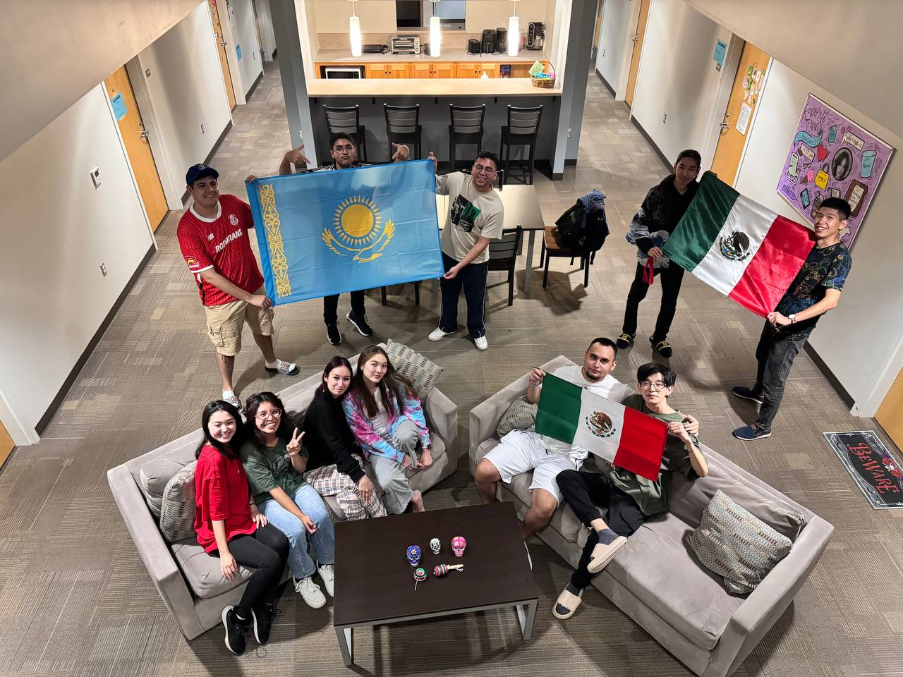
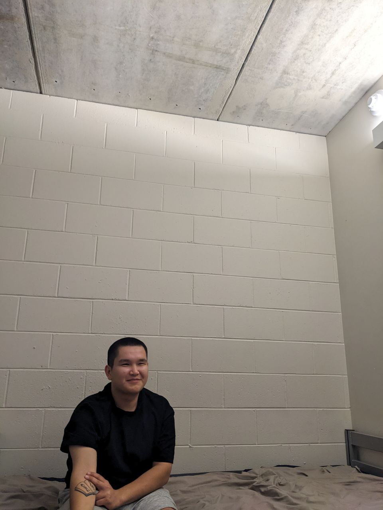
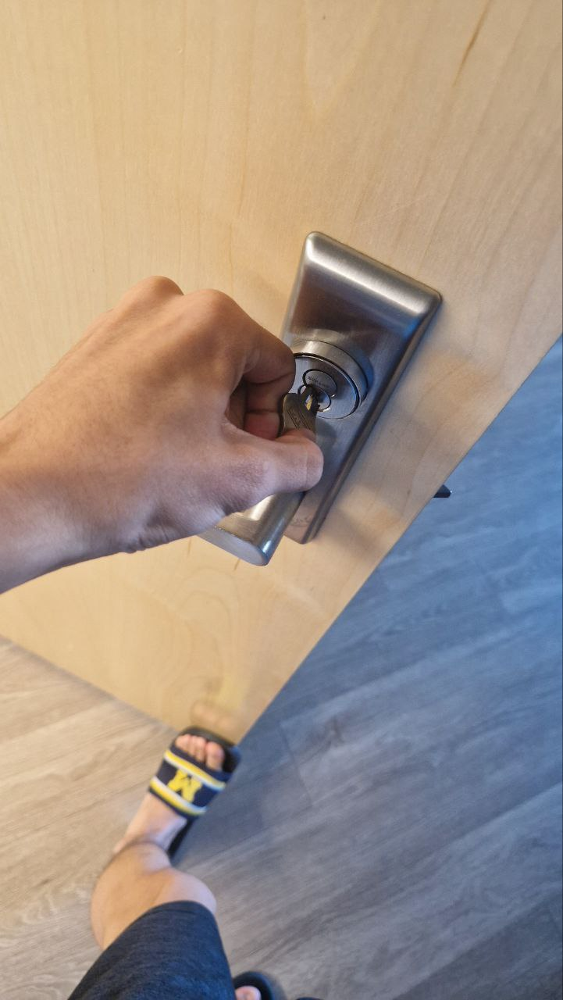
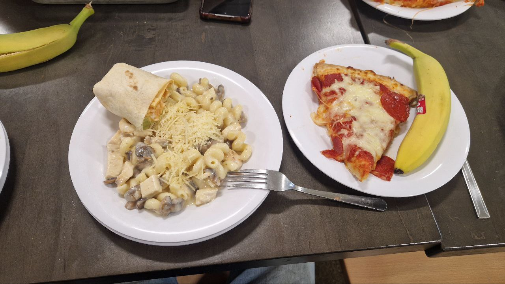

1. Arrival
For the first time in my life, I am deliberately not in kz. The first place I got to was the philadelphia airport. I was shocked. It is ten times bigger than Almaty's. It's a whole shopping mall, every store is like a "Marwin", a billion of everything we don't have. We walked there for two or three hours, then waited for our flight to Detroit. After that we waited for one person for another 1-1.5 hours, and then we were taken to the dormitory.
The doors are a separate joke. Almost all doors are automatic, and next to them there is a button for the disabled: you press it and the door opens. And if you need to push the door, there is no handle at all - you just push. If you leave the building and need to push, the handle is located along the length of the door in the middle: you press it and the door opens. Very convenient if your hands are full.
2. People
I've been blown away by the locals. If you meet someone with your eyes, 90% of the time they will smile, say hello and ask how you are. Okay, if only employees did that, but passers-by... At first it was unusual, but now you want to say hello sincerely, not like in our country. Mom said that you must say hello, so you must. In our country I didn't care about anyone - well, my neighbor, so what? I see him once a year, what do I care? But here even a random person can say hello like a brother. I've done it a couple times myself. On August 31 we went out on the town, and on the way out I just looked at a fire truck, and the driver talked to me while was at a stoplight. We said goodbye and he drove off. And there were a lot of situations like that. One more case: I went out of the dormitory in the evening to the guys, noodles and a container in my hand. A girl came out with me, and she came up to me and asked: “Do you need a microwave?” I'm stunned, thinking maybe it's some kind of scam. And she actually offers. So I said, “Okat let's go” took her number, and we agreed to meet tomorrow. I was sitting in the lobby reading, and she comes into the dorm. We went in and I got the microwave. It was UNTOUCHED, and unpacked.

A joint photo with the Mexicans we made friends with.3. University Life
If our LTU is so average by local standards. Then Kazakhstan is a total swamp, banana republic and all that in education. I knew there was a gap, but not like this. Only one subject is not interesting, but the rest are more or less. However the teachers are almost all good. At AITU, God forbid you get a real teacher in your major subject, not a vegetable who just wants to close the grant, it happens once a year. And here at least they know what they're teaching, with real experience. Yeah, my damn teacher has implemented ERP systems in the US and Canada, deployed satellite systems for all Volkswagen dealerships in the US, Canada, Mexico and Eastern Europe.
We have a lot of buildings, one for each department as I remember. Almost every second student has his own car, and not some Cobalt, but Mustangs, cabriolets.
Events. One of the perks of AITU is that it's not a bad student life and movement, but even here it sucked. I caught as many events in two weeks at LTU as I did in one trimester at AITU. There's a lot of free swag. We got t-shirts, shoppers, there was a lot of free food (cooked outside). There was something going on almost every day. As I was writing this, went to the bathroom and they already announced that there was going to be some sort of gag with goodies and prizes in a couple days.
 One of our campus buildings.
One of our campus buildings.
 Free ice cream.
Free ice cream.
 Another free ice cream.
Another free ice cream.
4. Dorm Life
There everyone has table, unlike my first-year dorm 1 for several people. However, there are some drawbacks:
- It's cold here. The weather is cooler, and the air conditioner blows 24/7. We covered it with a cloth, but it doesn't help much, you can't turn it off.
- Because the dormitory is new, apparently it was not completed, and we have no ceiling as such - it's just concrete, and taking into account one of the walls we are like convicts in jail.
- The toilet is common, as in some shopping center or hall, but this, I think, rather a plus, because I will not have to clean for everyone, as usual.
- The door. Yes, again. It's a tricky one, too: you can't open it from the outside without a key, unless you put the latch down. And it's like they turned the door upside down, you have to insert the key from the top of the handle, and to open it, you have to twist it, as if you're not opening it, but closing it. In general, the joke is fierce.
- We are on the first floor. On the second day I wake up, and my neighbor tells me how he woke up and there are several guys gazing at us from the window. It got creepy.
- The Internet here is much better than our university/dormitory Internet. It is more stable and faster, but the mobile is about the same, bullshit.
- They don't control entrance/exit here like in ours. In ours they don't let anyone in after 11, and according to the rules you can't let anyone in (but when did ours care about that). And here everyone is normal: come in, go out when you want, do what you want, the main thing - do not be an asshole.
- Of the annoying - is that the parcel normally do not pick up. First it has to be picked up by people at the entrance, processed, and then only you can pick it up. I was lucky and got it the same evening, if it had been Friday or Saturday, I would have waited until Monday, I would have raged, I gave $12 to get my keyboard the next day.
- Another dorm (Reuss) is goated: there is billiards, table soccer and a lot of board games, and the rooms are divided into pods (huge rooms with other rooms), and we have in East everything like in a hotel, a long corridor.

Photo of my roommate.
You need to turn right not left.5. Academic Life
Here we use Canvas, in AITU we use Moodle. Moodle is more familiar to me, but Canvas is more functional, so I just have to get used to it. The differences are that quizzes here can be taken online, and grades are points, 1000 points/ 100%/ 4.0 GPA/ A grade, etc. to make it clear. Whereas all of our in AITU sillabuses ± similar, in LTU they can be very different. Example: For some subjects if you don't show up twice, that's it, F, get the hell out of the course, etc. In graduate courses, the minimum grade is 70!!! It's the hunger games: either scholarship or go to retake, take it or leave it. Sometimes the professors read from slides, but that's fine.
6. Free Time
I tried not to waste my free time. As I said above, there is always some kind of action here, and you won't be bored. On 31.08-01.09 we walked around Detroit. Mostly in the evenings we sit in the hall of Reuss and play something: mafia there, sniper, etc. At the end of August I decided to sit down in LeetCode (well, I took the keyboard for nothing, it's awesome, I have to use it and type), and sometimes I solve problems instead of going to them.
 Exploring Detroit.
Exploring Detroit.
7. Food
Oooh, it's a total GG. Everything here is fast food in the cafeteria. It was okay for the first time, but now I'm trying to get something normal, like rice (it's lousy here, damn you, even I cook it better), pasta (the best I've ever eaten here), and other things. Of the drinks, there is a VERY large amount of sodas. After the first week I switched to coffee and tea, but the machine broke, I've been living for 4-5 days without tea, I feel bad. So I started drinking orange juice - better that than tons of soda.
The pizza is huge, but a lot of tomato paste, and because of that not very good.
Burgers are okay.
Went to one diner yesterday (I forgot to take a picture), gave $17 for the combo. To be honest, it was crap, I know a better place in Almaty (Wild Food, alga RAAH 🦅🦅 🦅 🦅 🦅 🦅).
Visited local McDonald's. Average, but they had my order ready in a MINUTE. I looked at the clock - 17:39, they yell my number - time 17:40, I was freaking out.

A meal from the cafeteria.8. Language
At first it was difficult to readjust to English. Learning English and when everyone around you speaks English are different things. Sometimes it is difficult to understand what others are saying (they eat the letters or say something quietly). We live by the rule: languages should not be learned, but felt. I have not had any severe problems, I didn't know how to translate a couple of words at most.
9. Prices
They are both high and low depending on what you buy. Food at the store, cafe/restaurant and in general anything that requires as such live service can come out expensive. I want to change my haircut, but it costs from $40. I'm gonna cry.
But what you just buy in the store (food does not count), electronics there clothes are quite normal. For example, I bought sneakers from Under Armour for 37$ (~18,000₸), branded clothing in our country for such a price try to find.
And lastly I HATE FEE'S AND TAXES, CURSE ON YOU WHO CREATED THEM, LIKE WTH IS THIS?